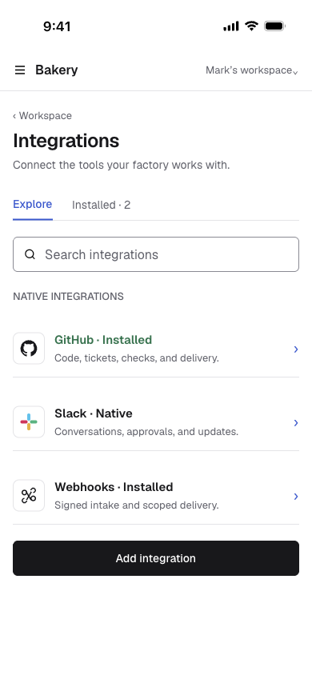

One catalog. Dedicated provider and connection pages.
Eleven responsive route families cover discovery, provider-owned authorization, organization configuration, connection lifecycle, and recovery.

Eleven responsive route families cover discovery, provider-owned authorization, organization configuration, connection lifecycle, and recovery.
